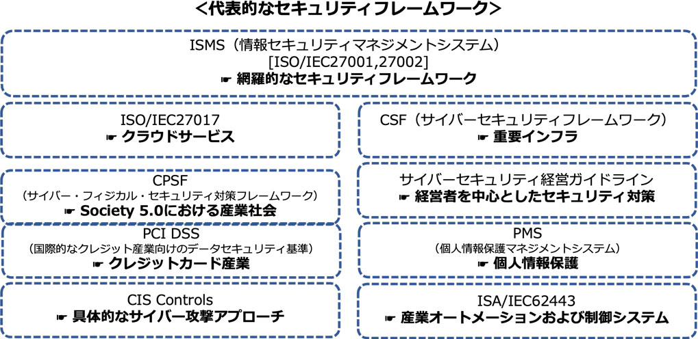

7-1-1. セキュリティフレームワークの役割と重要性
セキュリティフレームワークの概要およびその利用メリットについて説明します。
セキュリティフレームワークとは
セキュリティ対策を行うために定義された指針やセキュリティ対策基準、ガイドライン、ベストプラクティス集のことを指します。自社におけるセキュリティリスクを評価・管理し、適切なセキュリティ対策を計画、実装、管理するための基盤となります。
セキュリティフレームワークを使用するメリット
効果的なセキュリティ対策
フレームワークを使用することで、対策の抜け漏れを防ぎ、効果的かつ適切なセキュリティ対策を行うことが可能となります。
信頼性の確保
認証制度が存在するフレームワークの場合、そのフレームワークに従ってセキュリティ対策を実装し、第三者機関から認証を受けることで、取引先や顧客からの信頼獲得につながります。
フレームワーク使用上のポイント
上記のようにフレームワークは数多くの種類がありますが、まずは業種業態を問わず、セキュリティ対策の全体の枠組みと網羅的な対策項目を提示しているISMSをベースとするとよいでしょう。そして必要に応じて、業種業態や重点領域ごとに特に注力すべき内容が詳細化されている各種フレームワークの内容で補完することが大切です。